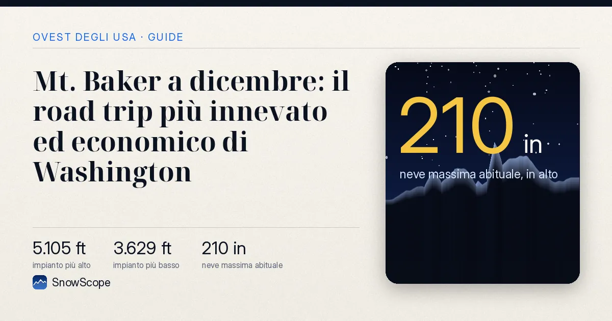

Mt. Baker a dicembre: il road trip più innevato ed economico di Washington
Se avete solo una gita sugli sci da fare a dicembre nel Nordovest, puntate verso la Mount Baker Highway. Nella nostra serie storica di 46 inverni, a metà montagna al Mt. Baker c'erano almeno 20 in (50 cm) di neve il 15 dicembre nel 93 % dei casi, e uno skipass adulto nei giorni feriali costa 98,80 $, acquistato alla cassa in giornata.
Le previsioni neve in tempo reale per Mt Baker nell'app SnowScopeAltezza neve, allerte powder e mappa 3D, gratis.
Dopo Glacier, l'ultimo paese, tutto diventa bianco
Mt. Baker non è una città-resort. Si guida verso est da Bellingham, si fa benzina a Glacier e si sale fino a una base a circa 3.630 ft (1.106 m). Il comprensorio mappato è compatto: 10 impianti e circa 14 mi (23 km) di piste, che arrivano fino a quasi 5.100 ft (1.556 m). Numeri modesti sulla carta, ma questo angolo delle North Cascades raccoglie neve come pochi altri posti nei 48 stati contigui.
In un inverno tipico della nostra serie storica, la neve persistente arriva a metà montagna a fine ottobre. Nei primi giorni di dicembre il rifugio è di solito già in pieno inverno.

Com'è un dicembre tipico
Il 1° dicembre, nell'inverno mediano della nostra serie storica, ci sono 31 in (79 cm) a metà montagna, a circa 4.370 ft (1.331 m). Al 15 dicembre si sale a 28 in (72 cm) alla base, 46 in (116 cm) a metà montagna e 69 in (176 cm) in vetta. Il giorno di Natale, a metà montagna si arriva a 57 in (145 cm).
Anche settimana per settimana il quadro è altrettanto stabile. La quota di inverni con buona neve (una media settimanale di 20 in, 50 cm, o più) a metà montagna è dell'85 % nella prima settimana di dicembre, del 91 % nella seconda, del 98 % nella terza e del 100 % nella settimana di Natale.

Lo skipass: alla vecchia maniera, più economico dal lunedì al giovedì
Al Mt. Baker le cose sono semplici. Lo skipass adulti (16-59 anni) costa 115,42 $ nei giorni di punta, da venerdì a domenica e nei festivi, e 98,80 $ nei giorni feriali, dal lunedì al giovedì fuori dalle festività, tasse escluse. Non c'è vendita online, né prevendita, né skipass multigiorno: si compra solo in giornata.
La mossa salva-budget è quindi evidente. Una gita di martedì o mercoledì fa risparmiare la differenza tra le due tariffe e regala anche un parcheggio più vuoto e una salita più tranquilla lungo la highway.
Il confronto con White Pass e Timberline
White Pass, a sud del Mount Rainier, è lo sfidante sul prezzo: lo skipass adulti online parte da 69 $ nei giorni feriali e 89 $ nei giorni di punta, ma sale man mano che le date si esauriscono, fino a 99 $ e 119 $. A metà montagna aveva 40 in (102 cm) in un tipico 15 dicembre, con 20 in (50 cm) o più nell'87 % degli inverni.
Timberline, sul Mt. Hood, ha sulla carta una metà montagna più profonda, 52 in (132 cm) in un tipico 15 dicembre, ma ha raggiunto i 20 in (50 cm) solo nel 78 % degli inverni, e lì lo skipass giornaliero intero per adulti costa 129 $ nei giorni feriali e 161 $ nei giorni di punta. Per la certezza di neve per ogni dollaro speso a inizio dicembre, il Mt. Baker è difficile da battere.
La parte onesta: le annate magre esistono
Un inverno magro, quello che capita un anno su dieci, lascia comunque circa 25 in (63 cm) a metà montagna il 15 dicembre. L'inverno scorso è stato uno di quelli sottili: 16 in (42 cm) a metà montagna in quella data.
Anche gli inverni recenti partono un po' più lentamente di quelli vecchi. Nei primi 15 inverni della nostra serie storica (1980-81 - 1994-95), il valore mediano al 15 dicembre era di 52 in (131 cm) a metà montagna, e ognuno di essi aveva 20 in o più. Negli ultimi 15 inverni (2011-12 - 2025-26) era di 41 in (104 cm), con l'87 % sopra i 20 in. Ancora una scommessa molto buona, solo non più un assegno in bianco.
Consigli per sciatori
- Pianificate una gita dal lunedì al giovedì: è lo skipass più economico e la giornata più tranquilla.
- Portate una carta o contanti e comprate alla cassa: gli skipass si vendono solo in giornata.
- Montate catene o gomme da neve sulla Mount Baker Highway, e controllate il bollettino stradale prima di lasciare Glacier.
- Puntate a metà dicembre o più tardi: dalla terza settimana in poi, quasi tutti gli inverni passati avevano buona neve a metà montagna.
- Uscite dalle piste battute? Leggete prima il bollettino valanghe: la neve abbondante e precoce può essere instabile.
Riferimenti e crediti
- Mt. Baker Ski Area, daily lift tickets (official) www.mtbaker.us/tickets-and-passes/daily-lift-tickets/
- White Pass, online day tickets 2026/27 (official) skiwhitepass.com/online-day-ticket-sales
- Timberline Lodge, winter lift tickets 2026/2027 (official) www.timberlinelodge.com/activities/winter/lift-tickets/
- OpenSkiMap (mapped lifts and runs) openskimap.org/
- avalanche.org, US avalanche centers and forecasts avalanche.org/
Su questi numeri
Numeri della neve: storico neve SnowScope, 46 inverni passati (1980-81 - 2025-26) alle quote indicate (base, metà, vetta), una ricostruzione della neve passata per un'area corretta per la quota (basata su ERA5-Land; Snow_Hydro 1 km per il Marocco), non i bollettini della località. Neve attuale: la mappa SnowScope. Impianti, piste e quote: mappatura OpenSkiMap. Prezzi: le pagine ufficiali elencate qui sotto, lette il 13 novembre 2026; i prezzi dinamici cambiano con la data e la domanda.
Bollettini valanghe ufficiali: avalanche.org (US national portal)
Cita questo articolo
Per ricerca, didattica o stampa: numeri e grafici sono liberamente riutilizzabili con licenza CC BY 4.0 citando così.
SnowScope (2026), Mt. Baker a dicembre: il road trip più innevato ed economico di Washington, https://snowscope.app/blog/it/2026/11/mt-baker-december-ski-trip-cheap-2026.html, consultato il 2026-11-14
SnowScope (Atlas Labs). (2026, November 14). Mt. Baker a dicembre: il road trip più innevato ed economico di Washington. SnowScope snow reports. https://snowscope.app/blog/it/2026/11/mt-baker-december-ski-trip-cheap-2026.html
BibTeX
@misc{snowscope2026mtbakerdecemberskitripch,
author = {{SnowScope (Atlas Labs)}},
title = {Mt. Baker a dicembre: il road trip più innevato ed economico di Washington},
year = {2026},
month = nov,
howpublished = {\url{https://snowscope.app/blog/it/2026/11/mt-baker-december-ski-trip-cheap-2026.html}},
note = {Published 2026-11-14 13:07 UTC; accessed 2026-11-14}
}· CC BY 4.0 · Metodi, dati e strumenti →
Mt Baker: neve e temperatura per quota, quest'inverno vs lo scorso (strumenti) →
Segui Mt Baker
Gratis: un messaggio quando arriva la neve e il meteo ogni mattina.